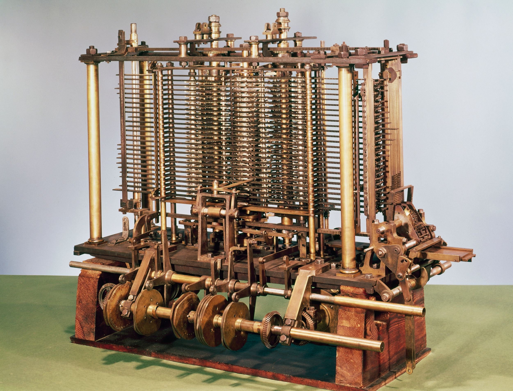
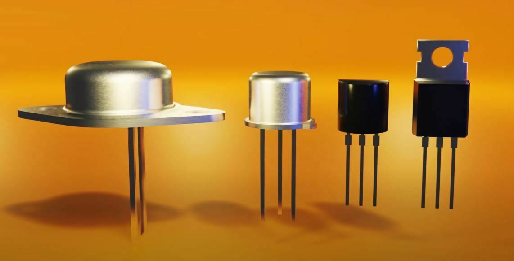
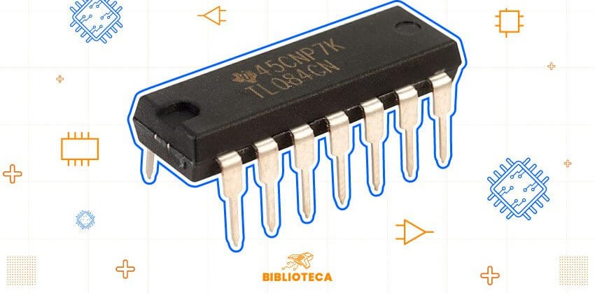
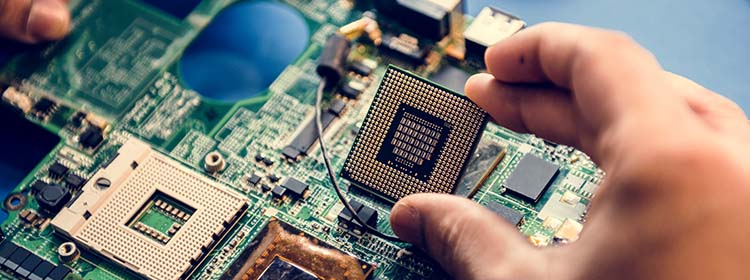

Donde aprenderás sobre la historia del hardware. Cada semana publicaremos las últimas tendencias y novedades del mundo tecnológico.
Historia del Hardware
¿Qué es el hardware?
El hardware es la parte física de un sistema informático. Son todos aquellos componentes tangibles que podemos tocar y ver, como la carcasa, el teclado, el monitor, la placa base, el procesador, la memoria RAM, el disco duro y otros dispositivos periféricos. En pocas palabras, es el "cerebro" y los "músculos" de una computadora.
En la actualidad, hardware también hace referencia a la parte física de equipos de diversa naturaleza. Como electrodomésticos, automóviles, teléfonos inteligentes, tablets, cámaras fotográficas, equipos electrónicos o piezas mecánicas.
Componentes Principales del Hardware
Unidad Central de Procesamiento (CPU)
Placa Base
Memoria RAM
Disco Duro (HDD/SSD)
Tarjeta Gráfica
Características Importantes
Rendimiento
Capacidad de almacenamiento
Compatibilidad
Facilidad de actualización
Los inicios del hardware
La historia del hardware es un fascinante viaje que se remonta a tiempos antiguos. Los primeros
dispositivos para realizar cálculos fueron herramientas mecánicas como el ábaco. Con el paso del tiempo, y
gracias a mentes brillantes como Charles Babbage, surgieron las primeras máquinas calculadoras
programables...

Hitos en la historia del hardware
Ábaco - Primer dispositivo de cálculo.
Calculadora de Pascal - Introducción de la aritmética mecánica.
Máquina analítica de Babbage - Precursor de las computadoras modernas.
Características del hardware temprano
Componentes mecánicos
Limitaciones en velocidad de procesamiento
Uso específico para cálculos matemáticos
Hitos Importantes en la Evolución del Hardware
Transistores: Reemplazaron a los tubos de vacío, haciendo los equipos más pequeños y eficientes.
Circuitos integrados: Permitieron integrar miles de transistores en un solo chip, dando lugar a los microprocesadores.
Microprocesadores: El corazón de las computadoras modernas, concentrando todas las funciones de procesamiento en un solo chip.
Computadoras personales: La democratización de la informática, con equipos más pequeños y accesibles para el público en general.

Transistores: son dispositivos semiconductores fundamentales en la electrónica. Actúan como interruptores o amplificadores de señales eléctricas.

Circuitos integrados: son dispositivos electrónicos que combinan múltiples componentes como transistores, resistencias etc. En un solo chip de semiconductor.

Microprocesadores: son circuitos integrados que funcionan como la unidad central de procesamiento.Se encarga de ejecutar instrucciones como operaciones aritméticas y lógicas.
Computadoras personales: dispositivos diseñados para ser utilizados por un solo usuario a la vez. Se utiliza para tareas cotidianas como navegar por internet y procesar documentos.
`
Hardware hoy en día
Hoy en día, el hardware ha evolucionado a pasos agigantados. Los dispositivos son cada vez más pequeños,
potentes y especializados. Desde los smartphones hasta las supercomputadoras, el hardware está presente
en todos los aspectos de nuestra vida.
Computadoras de escritorio:
Para uso doméstico y profesional.
Portátiles:
Computadoras portátiles de diferentes tamaños y capacidades.
Tabletas:
Dispositivos híbridos entre computadora y teléfono inteligente.
Smartphones:
Teléfonos inteligentes con acceso a internet y aplicaciones.
Consolas de videojuegos:
Dispositivos diseñados para jugar videojuegos.
Servidores:
Computadoras potentes que almacenan y procesan grandes cantidades de datos.
La máquina de Turing y la computación
Alan Turing (1912-1954) fue un matemático y lógico británico que introdujo la "Máquina de Turing" en 1936, un modelo teórico fundamental para la computación moderna. Su trabajo abordó el "problema de la decisión" y formuló la "Tesis de Church-Turing", que establece que cualquier función matemática calculable puede ser realizada por una máquina de Turing.
Después de la guerra, Turing diseñó la "Máquina Automática de Computación" y propuso el "Test de Turing" para evaluar la inteligencia de las máquinas. Aunque su legado fue ignorado durante años, en 2009 recibió una disculpa oficial y fue indultado póstumamente en 2013. Turing es ahora un ícono de la informática y los derechos humanos, y su historia fue popularizada por la película "The Imitation Game" (2014).
GitHub es una plataforma colaborativa para el control de versiones de proyectos de software que utiliza Git como base. Entre las principales características que facilitan la colaboración se encuentran el uso de Pull Request y Forks. A continuación, te explicamos qué son y cómo funcionan.
¿Qué es un Fork?
Un Fork es una copia de un repositorio existente en tu propia cuenta de GitHub. Te permite hacer cambios en el código sin afectar el proyecto original. Este es un paso inicial clave cuando deseas contribuir a un proyecto abierto en GitHub.
Al hacer un Fork, puedes trabajar en tu copia del proyecto y modificar el código según sea necesario. Posteriormente, cuando estés listo para compartir tus cambios, puedes abrir un Pull request para que los mantenedores del proyecto original revisen tu trabajo.
¿Qué es un Pull Request?
Un Pull request es una solicitud que haces para que tus cambios en el código (que has hecho en tu repositorio forkeado) sean revisados e integrados en el proyecto original. Los mantenedores del proyecto revisarán tu código y decidirán si lo aceptan, lo rechazan o te piden más cambios.
Esta es una forma esencial de colaborar en proyectos de código abierto. Permite que múltiples personas contribuyan a un mismo proyecto, asegurando que todas las modificaciones se revisen antes de ser añadidas al repositorio principal.
En resumen, tanto los Forks como los Pull requests son herramientas fundamentales para la colaboración en GitHub. Mientras que el Fork te permite trabajar en una copia independiente del proyecto, el Pull request es el mecanismo para contribuir con tus mejoras al proyecto original.
Colaboradores
A continuación se presentan los colaboradores del proyecto, junto con sus enlaces a GitHub: